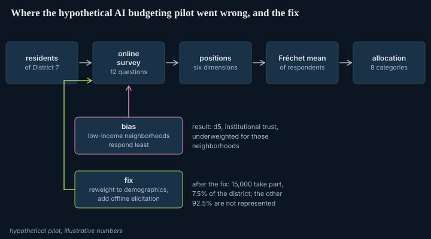

Chapter 16: AI in Politics
“The question is not whether AI will transform politics. It is whether the transformation will preserve the manifold or collapse it further.”
RUNNING EXAMPLE — DISTRICT 7
District 7’s city council experiments with an AI-assisted participatory budgeting system. The system represents each budget proposal as a point on the preference manifold, aggregates citizen preferences using manifold methods rather than scalar voting, and identifies the budget allocation closest to the electorate’s Frechet mean. The pilot is promising: the AI-assisted system produces allocations that score 0.4 on the Political Bond Index, compared to 1.2 for the traditional council-driven process.
But when the system is audited, a problem emerges. The manifold estimation underweights $d_5$ (institutional trust) for low-income neighborhoods — the neighborhoods whose residents are least likely to complete the online preference survey. The AI system, trained on a biased sample, has constructed a distorted manifold that systematically underrepresents the preferences of the most vulnerable voters.
The correction is straightforward: weight the survey responses to match the district’s demographics and add offline preference elicitation for undersampled communities. The corrected system performs well. But the episode illustrates the geometric danger of political AI: any system that constructs a manifold from data inherits the biases of the data, and in politics, data bias is not random — it is correlated with power.

Figure 16.1. The hypothetical AI-assisted budgeting pilot of District 7, as the chapter describes it. Residents answer an online survey of 12 questions that places them on the six dimensions; the system takes the Fréchet mean of the respondents and the allocation across 8 categories closest to it on the budget hyperplane. The audit finds that low-income neighborhoods respond least, so d5, institutional trust, is underweighted for them; the fix reweights to the district’s demographics and adds offline elicitation. Even then, 15,000 participants are 7.5% of the district.
Three Intersections of AI and Politics
Artificial intelligence intersects with democratic politics in three ways, each with distinct geometric implications:
AI as Campaign Tool
Political campaigns have adopted AI for microtargeting: delivering personalized messages based on voter profiles extracted from social media activity, consumer data, purchasing history, and public records. The geometric interpretation is precise: microtargeting is heuristic surgery — the construction of a different heuristic field for each voter.
A campaign using AI microtargeting can emphasize $d_1$ (economic messaging) for economically anxious voters, $d_2$ (social values messaging) for culturally conservative voters, $d_6$ (identity messaging) for identity-motivated voters, and $d_5$ (anti-institutional messaging) for low-trust voters — never revealing that its candidate has positions on all six dimensions. The candidate is presented as a personalized 1D projection, not as a point on the manifold.
The deception is geometric: the candidate has a fixed position on the manifold, but each voter sees a different projection of that position, optimized to make the candidate appear close on the dimension the voter cares about most. The voter who prioritizes healthcare sees the candidate’s healthcare position; the voter who prioritizes border security sees the border position; and neither voter sees the full manifold position, which may reveal tensions between the healthcare and border positions that would alter the voter’s assessment.
This is the Campaign Gradient Theorem (Chapter 6) implemented at scale: instead of choosing one projection axis for the entire electorate, the AI chooses a personalized projection axis for each voter, maximizing the perceived proximity of the candidate on each voter’s most salient dimension.
AI as Information Medium
Algorithmic recommendation systems — the primary mechanism through which most voters encounter political information — perform the axis rotation described in Chapter 11. The algorithm selects which political content each user sees, optimizing for engagement. The geometric consequence is personalized dimensional suppression: each voter sees a different projection of the political manifold, optimized for their individual engagement profile.
The AI recommendation system is the most powerful media heuristic corruption mechanism in history. It operates at scale (billions of users), at speed (real-time optimization), and at precision (personalized to individual behavioral profiles). Its geometric effect — shattering the shared manifold into billions of incompatible 1D projections — undermines the common ground that democratic deliberation requires.
AI as Governance Participant
The most speculative but potentially transformative intersection: AI systems that participate in governance by analyzing policy proposals, aggregating citizen preferences, identifying Pareto-optimal solutions, or facilitating deliberation.
An AI system that operates on the full preference manifold — representing each citizen’s position in six dimensions, computing manifold distances, identifying the Frechet mean, and recommending policies that minimize the Political Bond Index — would, in principle, provide better representation than any voting system. The system would not be subject to the Democratic Irrecoverability Theorem because it would not contract the manifold to a scalar: it would operate on the full manifold and produce multi-dimensional outputs.
But the “in principle” carries enormous caveats.
The No Escape Theorem for Political AI
Note (2026-11-26). Geometric Ethics withdrew the dihedral group $D_4$ as the Hohfeldian symmetry group in its version 1.25 (November 2026) and now posits $V_4 \times U(1)_H$, with the Klein four-group $V_4$ in place of $D_4$ and without a uniqueness claim. The sentence below is restated with $V_4$. Nothing in this section depends on a quarter-turn or on a group of order eight, so the political reading stands as written. The No Escape Theorem itself is Theorem 18.1 of Geometric Ethics, stated there for a structurally contained agent under four requirements.
The No Escape Theorem from Geometric Ethics (Ch. 18) states that an AI system operating within the geometric framework cannot escape the manifold’s structure. The theorem was originally stated for the moral manifold: an AI constrained by the $V_4 \times U(1)_H$ symmetry of the moral manifold cannot optimize in a direction that violates the symmetry, regardless of how sophisticated its optimization becomes.
The political instantiation: a political AI constrained by the democratic gauge group $G_D$ (voter anonymity, option neutrality, re-description invariance) cannot produce outcomes that violate these symmetries. It cannot favor specific voters (violating anonymity), cannot advantage specific candidates by label (violating neutrality), and cannot produce outcomes that depend on how preferences are described (violating re-description invariance).
More fundamentally: a political AI that operates on a scalar projection of the manifold cannot do better than the projection allows. An AI that optimizes on the left-right axis, no matter how perfectly, loses five-sixths of the manifold information. That this loss is structural, not computational, is the content of the Scalar Irrecoverability Theorem (Geometric Reasoning, Theorem 13.1, a conditional theorem; that book’s Chapter 13, restated in that book’s Section 10.7), not of the No Escape Theorem — no amount of algorithmic improvement can recover information that the projection destroyed.
The implication for AI-assisted governance: the AI must operate on the full manifold, not on any scalar projection. A political AI that uses 1D ideology scores, partisan labels, or scalar approval ratings as inputs is provably inadequate, regardless of its sophistication. The geometry constrains the AI as firmly as it constrains human institutions.
Deepfakes and Epistemic Destruction
Deepfake technology — realistic AI-generated video and audio — attacks $d_5$ (institutional trust) directly. The geometric analysis:
Before deepfakes, visual evidence served as a reliable coordinate on the manifold. A voter who saw a politician making a statement could locate the politician’s position on the manifold with reasonable confidence. The visual evidence was a low-noise signal — the heuristic field in the neighborhood of the visual evidence was well-calibrated.
After deepfakes, visual evidence is no longer reliable. Any video could be fabricated. The voter can no longer trust that the politician actually said what the video shows. The heuristic field in the neighborhood of visual evidence has been corrupted — its noise level has increased to the point where the signal is no longer extractable.
The deepfake does not need to be believed to be destructive. It needs only to exist as a possibility. The mere knowledge that deepfakes are possible degrades the epistemic heuristic for all voters: every video is now suspect, every audio clip is potentially fabricated, and the voter’s ability to locate politicians on the manifold from their public statements is systematically degraded.
The geometric effect is the loss of a manifold coordinate. Visual evidence, which previously provided reliable position estimates on $d_1$ through $d_6$ (by revealing politicians’ actual statements), now provides noisy estimates at best. The effective dimensionality of the voter’s heuristic map decreases — not because the manifold has changed but because the measurement instrument (visual evidence) has been corrupted.
Synthetic Media and the Manifold
The proliferation of AI-generated content — text, images, video, audio — introduces a new category of manifold distortion that goes beyond deepfakes. AI-generated political content can be produced at scale, personalized to individual voters, and distributed through algorithmic channels, creating what might be called “synthetic manifold construction” — the artificial creation of a perceived political reality that has no basis in actual voter positions or policy proposals.
Consider the following scenario, already technically feasible in 2026: A political campaign uses AI to generate thousands of personalized video messages, each tailored to a specific voter profile. For economically anxious voters, the video emphasizes the candidate’s jobs plan. For culturally conservative voters, the video emphasizes the candidate’s traditional values. For environmentally concerned voters, the video emphasizes the candidate’s climate position. The videos are not deepfakes — they show the real candidate saying real things. But they are synthetically selected: each voter sees only the dimension that maximizes their perceived proximity to the candidate.
The geometric effect is total heuristic personalization: each voter’s media environment constructs a different manifold neighborhood around the candidate, showing only the dimensions on which the candidate is close. The voter has no way to know that other voters are seeing different dimensions — each voter believes they are seeing the complete candidate, when in fact they are seeing a personalized 1D projection.
This is the Campaign Gradient Theorem implemented at the individual level. Instead of choosing one projection axis for the entire electorate, the AI chooses a personalized axis for each voter. The manifold information available to each voter is reduced to the single dimension that maximizes the campaign’s advantage — a personalized application of dimensional suppression.
The defense against synthetic manifold construction is manifold transparency: institutions (debate commissions, media organizations, regulatory agencies) that ensure voters have access to candidates’ full manifold positions, not just personalized projections. The geometric framework provides the language for this defense: the goal is not “unbiased” coverage (a 1D concept) but manifold-complete coverage (a multi-dimensional concept) — coverage that presents candidates’ positions on all relevant dimensions, not just the dimensions that any single voter or campaign prefers to emphasize.
The Promise and the Peril
AI in politics embodies the central tension of the Geometric Series: technology can either preserve manifold structure or destroy it, and the outcome depends on how the technology is designed.
The promise: AI systems that operate on the full preference manifold — aggregating multi-dimensional preferences, computing manifold distances, identifying Pareto-optimal outcomes — could dramatically reduce the Political Bond Index. An AI-assisted deliberation platform that helps citizens explore the manifold, identify areas of agreement on suppressed dimensions, and find compromise positions that voting systems cannot discover would be a geometric improvement over existing democratic institutions.
The peril: AI systems that optimize on scalar projections — engagement metrics, click-through rates, partisan advantage — will further collapse the manifold, creating personalized 1D projections that shatter the shared political space. An AI campaign tool that delivers perfectly targeted 1D messages to each voter maximizes the candidate’s electoral advantage while minimizing the voter’s manifold information. The AI makes the candidate look close on one dimension while hiding the candidate’s full manifold position.
The geometric framework provides the diagnostic: measure the Political Bond Index. If an AI system reduces the $BI$ — if voters are better represented on the manifold after the AI’s intervention — the system is beneficial. If the AI increases the $BI$ — if voters are worse represented, more distant from their representatives, less accurately informed about the manifold — the system is harmful. The $BI$ is the compass.
District 7: The AI Pilot
District 7’s AI-assisted participatory budgeting system, after correction for the sampling bias, operates for a full budget cycle. The results of this hypothetical pilot, with illustrative numbers:
Process: 15,000 residents (7.5% of the district) participate through an online platform. Each participant answers a 12-question instrument that locates them on the six-dimensional preference manifold, then allocates a virtual budget across 8 spending categories. The AI system computes the Frechet mean of the participating voters’ preferences on the manifold and identifies the budget allocation closest to this mean on the budget hyperplane.
Outcome: The AI-recommended allocation differs from the council’s traditional allocation on two dimensions: it increases funding for public transit (reflecting the $d_3$ preferences that the electoral system suppresses) and decreases funding for a highway expansion project that primarily benefits the exurban belt (the subpopulation with the lowest participation rate, even after sampling correction).
Evaluation: The Political Bond Index for the AI-recommended allocation is $BI = 0.7$, compared to $BI = 1.2$ for the council’s allocation. (The 0.4 of the chapter’s opening was the pilot’s score before the audit found the sampling bias; 0.7 is the score after the correction.) The AI system produces a better manifold representation — but only for the participating population. The non-participating 92.5% are not represented in the AI’s manifold estimation, and their preferences may differ systematically from the participants’.
Lesson: The AI system is a tool, not a replacement for democratic institutions. It can improve representation for those who participate, but it cannot solve the participation problem — the fact that manifold estimation requires data, and data collection is not uniform across the population. The geometric framework provides the diagnostic ($BI$), the method (manifold estimation and Frechet mean computation), and the warning (biased data produces biased manifolds). The democratic challenge — ensuring that all citizens’ voices are heard, not just those who click — remains a human responsibility.
DISTRICT 7 — CHAPTER SUMMARY
We have analyzed three intersections of AI and politics — as campaign tool, as information medium, and as governance participant — through the geometric lens. AI campaigns perform personalized projection-axis selection, delivering each voter a custom 1D slice of the candidate’s manifold position. AI recommendation algorithms shatter the shared manifold into billions of incompatible projections. AI governance systems can improve representation by operating on the full manifold, but they inherit the biases of their training data.
The No Escape Theorem constrains political AI, and the Scalar Irrecoverability Theorem adds that no system that operates on a scalar projection can overcome the democratic irrecoverability that the projection creates. The system must work on the full manifold — and on a manifold estimated from unbiased data.
In Chapter 17, we ask: what does the domain of politics teach the general geometric theory? What has the political manifold revealed that the moral manifold, the economic manifold, and the other domain manifolds could not?